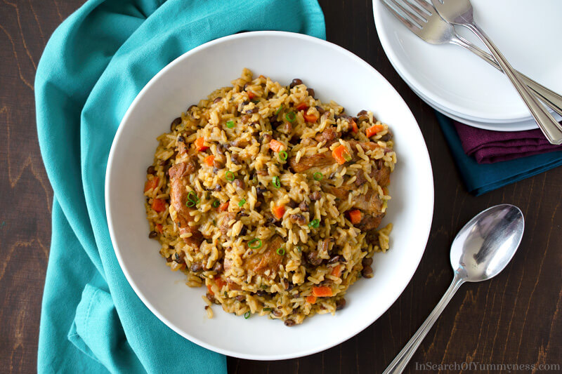

Pelau

Description
Trinidad PelauThis is an iconic recipe from the island of Trinidad that
is often made on weekends and when family and friends get together for a
lime (Caribbean slang word for get-together).
This one-dish meal originating in the French West Indies combines pigeon
peas, meat or chicken, and rice along with fresh herbs and coconut milk.
The entire dish is then flavored and colored with.
Yield: 6 Servings
Ingredients
3 pounds boneless, skinless chicken thighs, cut into 2-inch pieces
2 tablespoons green seasoning
2 teaspoons grated garlic
1 tablespoon Worcestershire sauce
1 tablespoon soy sauce
1 tablespoon tomato ketchup
Kosher salt, to taste
Freshly ground black pepper, to taste
2 tablespoons vegetable oil, or canola oil
3 tablespoons cane sugar, or brown sugar
2 cups parboiled rice, washed and drained
3/4 cup coarsely chopped onion
1/2 cup coarsely chopped red bell pepper
2 cups canned pigeon peas
1 cup diced carrots, optional
2 cups fresh coconut milk
2 cups chicken stock, or water
1 whole Scotch bonnet pepper
1/2 cup thinly sliced green onions, white and green parts
Steps
- Gather the ingredients.
- In a large bowl, place the chicken, green seasoning, garlic, Worcestershire sauce, soy sauce, and ketchup, along with salt and pepper to taste.
- Toss to mix and coat the chicken with the seasonings. Set aside and let marinate for at least 1 hour.
- Pour the oil into a large pot and place over medium-high heat. Let it heat until hot but not smoking.
- Make the burnt sugar by sprinkling the cane sugar into the hot oil in an even layer.
- Let the sugar melt until it starts to froth and bubble.
- As soon as the edges of the froth/bubbles start to turn a slight shade darker, immediately add the seasoned chicken. Stir to mix and coat with the burnt sugar.
- Let cook for 7 to 10 minutes.
- Add the rice to the pot, stir to mix, and cook for 3 minutes.
- Add the onion, red bell pepper, pigeon peas, and carrots (if using) and cook for 1 minute.
- Pour in the coconut milk and the chicken stock or water. Season with salt and pepper to taste.
- Toss in the whole Scotch Bonnet Pepper. Bring the mixture to a boil and cover the pot.
- Once it reaches a boil, partially remove the lid and continue to boil for an additional 7 to 8 minutes.
- Cover the pot fully, reduce the heat to low, and let cook for 25 to 30 minutes or until all the liquid has been absorbed.
- Sprinkle the green onions on top and fold into the pelau. Taste and adjust seasonings with salt and pepper if necessary.
- Serve hot or at room temperature and enjoy.